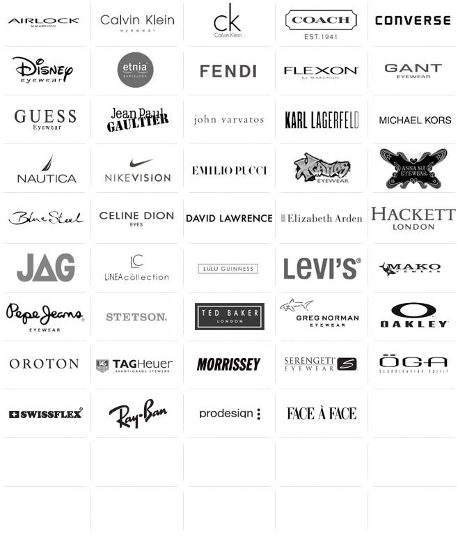

We sell ophthalmic glasses, sunglasses and contact lenses. We specialise in optical requirements for children.
About Us
We are a Brisbane based company which is well regarded locally. We are recognised as being able to manage children’s needs with a professional caring approach. We employ two full-time, in-store qualified optometrists able to diagnose and treat a number of eye related problems. Our optometrists strive to make a positive difference to the health and well-being of our customers, endeavouring to obtain the best visual outcome so that customers realise their full potential in work, study, sport and leisure.
Services supplied are as follows:
- Eye Examinations (may be bulk-billed)
- Spectacles (may be bulk-billed to private Health Fund optical cover)
- Diabetic eye examinations
- Colour Vision assessments
- Macular Degeneration tests
- Glaucoma & eye pressure testing
- Checks for Cataracts
- Clearness of vision (myopia, hyperopia, astigmatism)
- Focusing ability (Presbyopia)
- Eye muscle movement and control
- Amblyopia (lazy eye)
- Contact lens fitting and management
- Referrals for eye laser surgery
- Mining & Industrial Safety Spectacles
- Advice on the correct fitting of good quality sunglasses (both prescription and non-prescription, in both adults and children, particularly in a sporting environment)
Our premises are within The Myer Centre in the Queen Street Mall on Level 1, Shop number 36. Our phone number is 07 3256 7101.
Our trading hours are:
Mon – Thurs: 9am - 5.30pm
Fri: 9am - 9pm
Sat: 9am - 5pm
Sun: 10am - 5pm
We stock a comprehensive range of frames from the following brands:
About the owner and her philosophy
Features of the Website
A visually attractive site with that shows examples of your product but no shopping cart features are required, as yet.
A generic contact form, that captures e-mail and a message
A join/unsubscribe from e-mail newsletter feature.
A book a consultation form that links to a free/busy calendar. This would allow our staff to use the website as a de facto diary, negating the need for paper…
Enter prescription details, to get a quote on a new pair of glasses. An optometrist/optician will return a quote on letterhead, this is a data gathering form only.